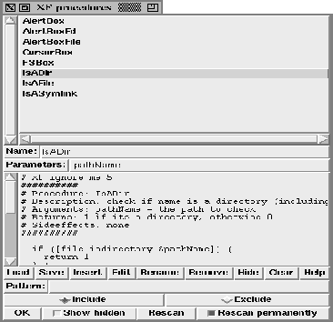

This procedure pops up the procedure handling dialog. This dialog provides access to the user defined procedures. The handling is the same as for the command handling dialog, except that this dialog does not display commands.

Figure: The procedure XFProcProgProcs